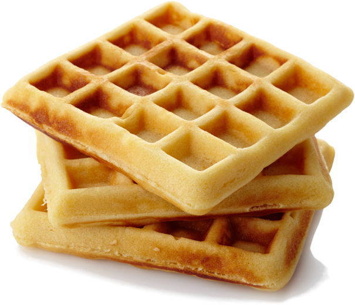

- 2 cups of all-purpose flour
- 4 teaspoons of baking powder
- 2 tablespoons of white sugar
- 2 eggs
- 1 1/2 cups of warm milk
- 1/3 cup of butter
- In a large bowl, mix together flour, salt, baking powder and sugar; set aside. Preheat waffle iron to desired temperature.
- In a separate bowl, beat the eggs. Stir in the milk, butter and vanilla. Pour the milk mixture into the flour mixture; beat until blended.
- Ladle the batter into a preheated waffle iron. Cook the waffles until golden and crisp. Serve immediately.
